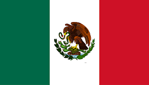

Ciudades y comidas de: Mexico

Monterrey
Monterrey, la capital del estado de Nuevo León en el noreste de México, es un extenso centro industrial y de
negocios rodeado de montañas. En lo alto se encuentra el Palacio del Obispado, una construcción barroca
antigua con un museo regional. En el centro de la ciudad se ubica la Macroplaza, una amplia zona verde de
plazas conectadas, que alberga el impresionante Museo de Arte Contemporáneo y la torre del Faro de Comercio,
que emite un láser verde hacia el cielo.
Comida de Monterrey
El Cabrito
El cabrito se abre por el medio, se extiende y se empala en una estaca, luego se asa lentamente durante horas
e incluso días por encima de las brasas ardientes. La carne tierna y sabrosa se disfruta más con tortillas
de harina y frijoles, para sacarle todo el sabor a Monterrey.
Acapulco
Acapulco, un balneario en la costa del Pacífico de México, se ubica en una gran bahía bordeado de edificios
de
muchos pisos y las montañas de la Sierra Madre del Sur. Se hizo famoso gracias al jet set en los años 1950 y
1960, y es conocido por su enérgica vida nocturna, las playas y el golf. Desde su icónico acantilado de La
Quebrada, los clavadistas profesionales se lanzan desde 40 m para sumergirse en una pequeña caleta en el
océano
todos los días y noches.
Comida de Acapulco
Pescado a la talla Pescado asado al carbón con salsas y condimentos.
Ceviche Trozos de pescados o mariscos marinados en jugo de limón. ...
Pozole guerrerense Sopa con granos de maíz cacahuacintle y carne de puerco o pollo, acompañado de lechuga,
chile, cebolla, limón y orégano.
Bibliografias
- https://www.google.com/search?q=ciudades+de+mexico&source=lmns&bih=600&biw=1366&rlz=1C1ALOY_esDO960DO960&hl=es-419&sa=X&ved=2ahUKEwjp1_GgpO_xAhWxhYQIHY9tDwcQ_AUoAHoECAEQAA
- https://www.google.com/search?q=bandera+de+mexico&rlz=1C1ALOY_esDO960DO960&sxsrf=ALeKk03qDBOedonqnn0hTqwZfBH7mv2Hnw:1626702524558&source=lnms&tbm=isch&sa=X&ved=2ahUKEwj9nIaRo-_xAhWwSzABHX2HA3oQ_AUoAXoECAEQAw&biw=1366&bih=600#imgrc=VRZ6ZvaeiNRQOM
- https://www.google.com/search?q=acapulco+comida+tipica&bih=600&biw=1366&rlz=1C1ALOY_esDO960DO960&hl=es-419&sxsrf=ALeKk00DljfZqsteIUR5F6yC9s4umZPgUA%3A1626703240495&ei=iIX1YM_iHbGYwbkPjbe2-AY&oq=Acapulco+comid&gs_lcp=Cgdnd3Mtd2l6EAEYATICCAAyAggAMgUIABDJAzICCAAyCAguEMcBEK8BMgYIABAWEB4yBggAEBYQHjIGCAAQFhAeMgYIABAWEB4yBggAEBYQHjoKCC4QsQMQQxCTAjoHCC4QsQMQQzoFCAAQsQM6AgguOgoIABCHAhCxAxAUOgUILhCTAjoHCC4QsQMQCjoHCAAQsQMQCjoECAAQCjoHCAAQhwIQFDoECAAQDToHCAAQyQMQDToKCC4QxwEQrwEQDToGCAAQDRAeOggIABANEAUQHkoECEEYAFCcywtYkvYLYOf_C2gCcAJ4AIAB5gGIAaIKkgEFMS44LjGYAQCgAQGqAQdnd3Mtd2l6wAEB&sclient=gws-wiz
- https://www.google.com/search?q=ciudades+de+mexico&tbm=isch&ved=2ahUKEwjox86Vo-_xAhVSioQIHYCVBQ0Q2-cCegQIABAA&oq=ciudades+de+m&gs_lcp=CgNpbWcQARgAMgQIABBDMgIIADICCAAyAggAMgIIADICCAAyAggAMgIIADICCAAyAggAOgQIIxAnOgcIIxDqAhAnOgcIABCxAxBDUPyWEVie0RFgoN8RaAJwAHgFgAG_AogBlx2SAQg4LjE4LjIuMZgBAKABAaoBC2d3cy13aXotaW1nsAEKwAEB&sclient=img&ei=xoL1YOjMB9KUkvQPgKuWaA&bih=600&biw=1366&rlz=1C1ALOY_esDO960DO960
- https://www.google.com/search?q=ciudades+de+mexico&source=lmns&bih=600&biw=1366&rlz=1C1ALOY_esDO960DO960&hl=es-419&sa=X&ved=2ahUKEwjp1_GgpO_xAhWxhYQIHY9tDwcQ_AUoAHoECAEQAA